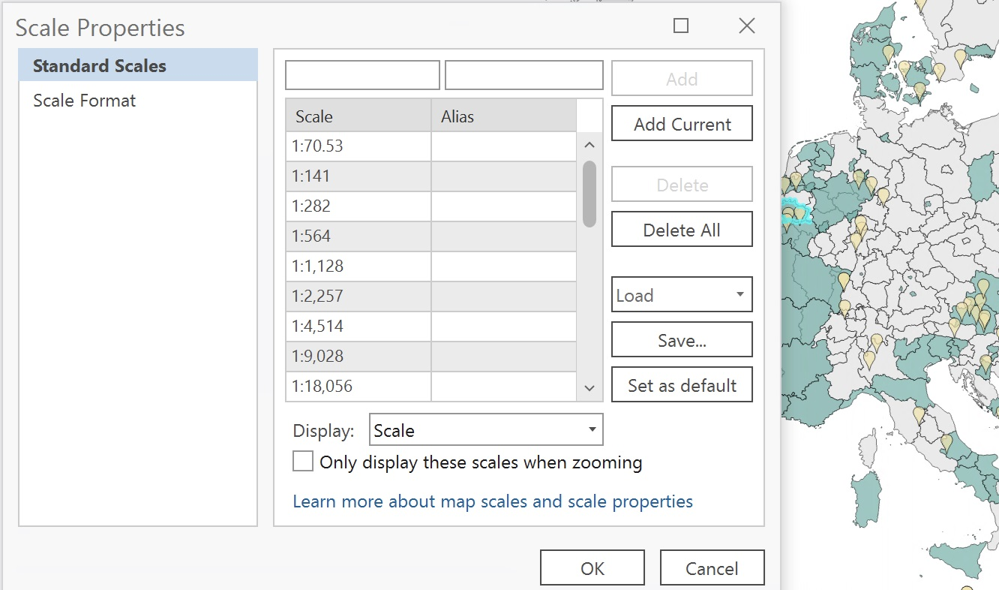
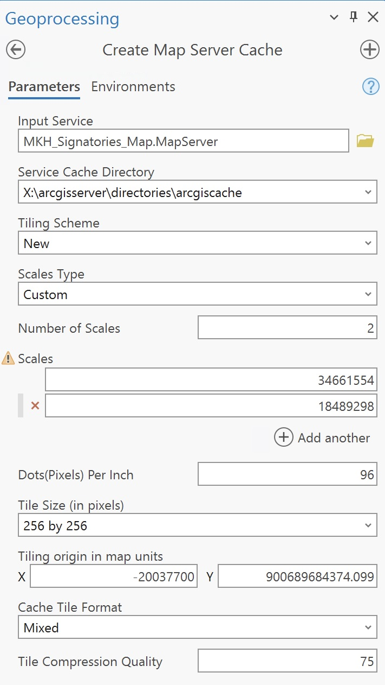
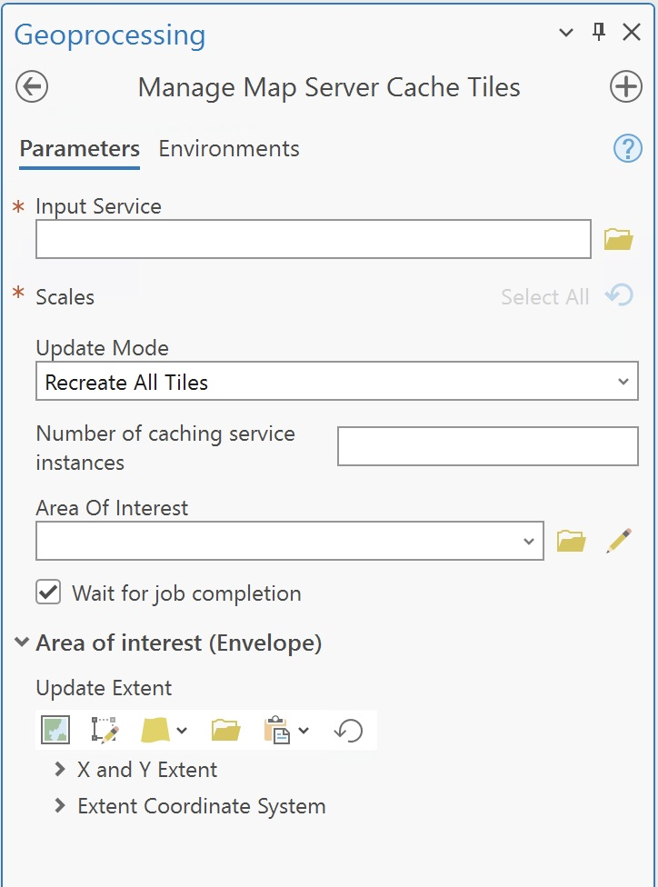

Publishing a Tile Cache Service
This documentation explains how to publish a tile cache service using ArcGIS Pro. Follow these steps to prepare, cache, and publish your data.
What is a Tile Cache Service
Tile cache a type of web map service that delivers map data as pre-rendered image tiles. These tiles are small, fixed-size images (usually 256x256 pixels) that are stitched together by a client application, like a web browser or GIS software, to create a seamless, zoomable map.
Tile cache vs regular (dynamic) map services
Tile Service: Pre-rendered images served as tiles; faster performance but less flexible for custom styling or querying. Dynamic Map Service: Renders maps on-the-fly based on user requests; slower but allows for dynamic styling and querying of data.
Prepare Your Data
- Open ArcGIS Pro.
- Add the desired data layers to a new map.
- Symbolize the layers as needed.
- Set the coordinate system for the map to ensure proper alignment with the basemap or intended usage.
Publish service
- In the
Catalogpane, go to theServerssection to view the list of available servers. Add a server if needed (follow steps from the publishing tutorial). - Right-click on the server where you want to publish the service and select
Publish. - Select the type of service you want to publish depending on your needs and your data.
- In the Publish Layer pane, under Configuration:
- Verify the Tiling Scheme matches your intended use.
- Ensure the Tile Cache path is correctly set.
- Click Analyze to identify any issues.
- Fix any warnings or errors flagged during the analysis.
- Click Publish to publish the service.
Verify the Published Service
- Log in to the EEA ArcGIS Portal.
- Navigate to the folder where the service was published.
- Open the service to confirm it displays correctly.
Display ArcGIS Online scale scheme
Use a predefined scheme (e.g., ArcGIS Online/Bing Maps/Google Maps) for compatibility.

Create the Tile Cache
- Go to the Analysis tab and click Geoprocessing.
- Search for the Create Map Server Tile Cache tool.
- In the Create Map Server Tile Cache tool:
- Choose the map service: Select the map service you previously published.
- Output Location: Use the default output folder.
- Tile Format: Choose a format like PNG or JPEG. We recommend mixed with a 75% compression.
- Scales: Define the scale levels to be cached. You can add the exact levels you want to cache
- Run the tool to create the tile cache.

Manage the Tile Cache
- Go to the Analysis tab and click Geoprocessing.
- Search for the Manage Map Server Tile Cache tool.
- In the Manage Map Server Tile Cache tool:
- Choose the map service: Select the map service you previously published.
- Choose between recreating all tiles or just update
- Select the Area of Interest.
- Run the tool.

Delete the Tile Cache
- Go to the Analysis tab and click Geoprocessing.
- Search for the Delete Map Server Tile Cache tool.
- Run the tool to completely delete the tile cache.
Additional Notes
- Ensure the scales chosen for caching match the requirements of your end users.
- Large caches may take significant time to generate and publish.
- Test the service in different environments to confirm usability.
Troubleshooting
Tile Cache Generation Issues
- Verify sufficient disk space is available.
- Ensure the data is in a supported format and coordinate system.
Publishing Errors
- Confirm adequate permissions to publish services.
- Contact Discomap helpdesk if you have any other issues.